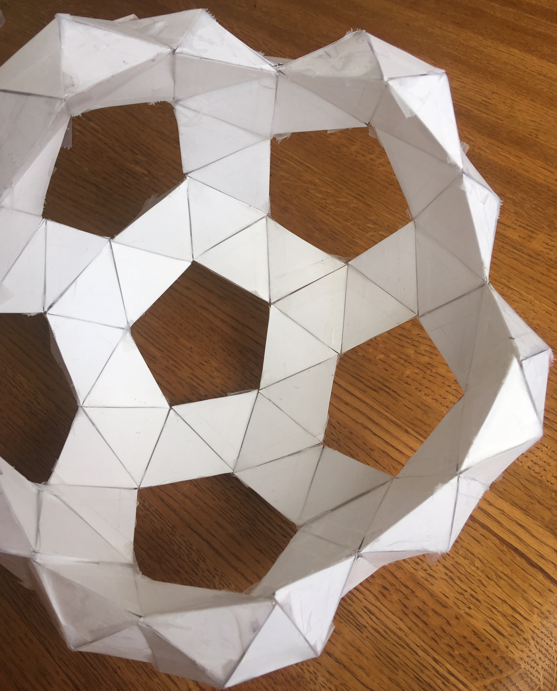
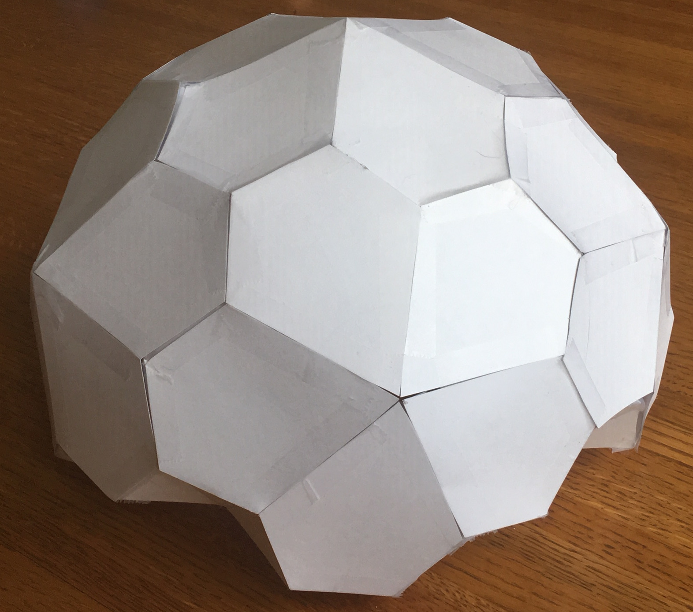

This article describes another iteration of the dome-like structure that I discussed a few months ago. I still don’t have a good vocabulary for describing why I think these things are neat, except to say that I somehow find it relaxing to work on toy engineering problems once or twice a month. I guess de gustibus non est disputandum – “there’s no accounting for (bad) taste!”
Lately, I have been playing around with simple structures that are subject to some unusual but not pointless constraints. Here are the ones I played with for this design:
-
How lightweight could you make a building? All other things being equal, lighter implies fewer materials, lower cost, and less ecological impact. To make something light, you must use what little material there is in a structurally strong fashion.
-
How simple could the constituent pieces of the structure be? Could they be made of a few simple shapes, repeated over and over? By re-using the same shape over and over again, production becomes more efficient because a miniature economy of scale is created.
-
Could you make temporary housing that could be flat-packed into the bed of a truck? This might be useful when you want something stronger and warmer than a tent, but less permanent than a house.
On to the structure itself! A teaser:
Background
Previously, when I was working on the reinforced pentakis dodecahedron dome toy concept, I mostly just followed the engineering tradition of using triangles and tetrahedra to create light and strong truss structures. I did not spend time deeply studying what the list of possible starting polyhedra were, and at the end of the project there was one thing in my mind that was not really resolved:
Are there other shapes that are closely-related to the pentakis dodecahedron, but that are simpler to construct or have more desirable properties? How many possible shapes could there be, and how would I know that I have found them all?
Previously, I started with the icosahedron and then connected it to a triakis icosahedron and pentakis dodecahedron without really understanding from whence these solids come, or what properties they have. Let’s go a little further this time into understanding the properties of regular polyhedra.
Platonic, Catalan, and Archimedian Solids
Last time, I briefly discussed the 5 platonic solids, which you may remember are the same shapes as dice:
| Platonic Solid | Vertex Figure | Face | |
|---|---|---|---|
 |
Tetrahedron | 3.3.3 | Triangle |
| Cube | 4.4.4 | Square | |
| Octahedron | 3.3.3.3 | Triangle | |
 |
Dodecahedron | 5.5.5 | Pentagon |
 |
Icosahedron | 3.3.3.3.3 | Triangle |
What’s a vertex figure, I hear you ask? It is a way to unambiguously define regular polyhedra. If you pick any vertex on the regular polyhedra, and then count the number of sides on each face that touches that vertex, moving in a clockwise or counterclockwise fashion, you will get a sequence of numbers that we call the vertex figure. For example, each corner of the cube touches three squares, so we can call it 4.4.4. We are going to use vertex figures to help us keep track of complicated shapes rather than memorize scores of names.
There is another advantage to using vertex figures: they are unambigious. In fact, you can use vertex figures to find shapes described by nerds in other countries, even if you don’t speak their language, because the language of math is universal.
You may remember that Platonic solids have several important properties:
- Every edge is the same length.
- Every face has the same number of sides.
- Every face’s interior angles are the equal
- Every vertex lies on the surface of a sphere.
These constraints are so restrictive that there are only five solids that meet all the criteria. But what would happen if we removed one or more of those constraints? As it turns out, by relaxing the constraints we can create two new families of solids: the Archimedian solids and the Catalan solids.
| All Edge | All Faces | Vertices on | ||
|---|---|---|---|---|
| Lengths Equal? | Same? | Quantity | Sphere? | |
| Platonic | Yes | Yes | 5 | Always |
| Archimedian | Yes | No | 13 | Not always |
| Catalan | No | Yes | 13 | Not always |
We’ll now go into more details on each of those families of solids. As a spoiler to all you nerds out there, Archimedian and Catalan solids are mathematically dual to each other, meaning that for each Catalan solid with X faces and Y vertices, there will be an Archimedian solid with Y faces and X vertices.
Archimedian Solids
First described by the greek mathematician Archimedes, the Archimedian solids are the set of polyhedra in which all edges are the same length. If you are gluing together equal-length matchsticks, there are only 13 possible shapes (or 15, if you count the chiral variants as different) that you can make:
| Archimedian Solid | Vertex Fig | Symmetry | |
|---|---|---|---|
 |
Truncated tetrahedron | 3.6.6 | Td |
 |
Cuboctahedron | 3.4.3.4 | Oh |
| Truncated Cube | 3.8.8 | Oh | |
 |
Truncated Octahedron | 4.6.6 | Oh |
| Rhombicuboctahedron | 3.4.4.4 | Oh | |
| Truncated Cuboctahedron | 4.6.8 | Oh | |
 or or |
Snub cube | 3.3.3.3.4 | O (Chiral) |
 |
Icosidodecahedron | 3.5.3.5 | Ih |
| Truncated Docedahedron | 3.10.10 | Ih | |
 |
Truncated Icosahedron | 5.6.6 | Ih |
 |
Rhombicosidodecahedron | 3.4.5.4 | Ih |
 |
Truncated Icosidodecahedron | 4.6.10 | Ih |
 or or |
Snub Dodecahedron | 3.3.3.3.5 | I (Chiral) |
If that table scares and confuses you, you aren’t the only one – I found this all very bewildering at first! What the heck do all of these weird names mean? Truncated? Rhombi-? Snub? Why is there a combination of a cube and octahedron called a cuboctahedron? How do the icosahedron and dodecahedron combine to make a icosidodecahedron? Also, what is a point symmetry group?
It’s real easy to “lose the forest for the trees” here, so please feel free to NOT learn the names of these things – some of these polyhedra even have multiple names, which can make studying them terribly confusing. In fact, I’m going to totally ignore defining the truncation, rombi, and snub operations, because I am suspicious of starting by describing them in terms of transformations. Instead, I like to focus on observing the most obvious symmetries that they have, and focus on learning the unambiguous vertex figure definitions.
To me, the important thing to note about polyhedral symmetries is that our 3D universe appears to force polyhedra into just very few point symmetry groups. If we are a little hand-wavy and ignore the special case of “chiral” polyhedra for now, we can say there are just two symmetries here:
- Shapes like cubes/octahedra (of which the tetrahedral symmetry can probably be considered a special case);
- Shapes like dodecahedra/icosahedra.
The point symmetry group, roughly speaking, refers to the ways in which you may rotate a polyhedra into a position such that its vertex points look the same as when you started.
Catalan Solids
Catalan solids, named for the Belgian mathematician Eugene Catalan, were originally described in 1865. Think about that for a moment – despite Archimedes having discovered important polyhedral shapes in ancient times and despite the fact that the Catalan solids are an incredibly closely related set of shapes, the Catalan solids went formally unrecognized or undiscovered for two millenia. It makes you wonder what other important facts of mathematics lie adjacent to our existing knowledge, but simply have not been discovered yet.
Catalan solids relax a different constraint than the Archemidean solids. Catalan solids do not have edges that are all the same length. Instead, they do have faces that are all the same shape. There are 13 (or 15) of these as well:
| Catalan Solid | Face Polygon | Symmetry | |
|---|---|---|---|
| Triakis Tetrahedron | Isosceles V3.6.6 |
Td | |
| Rhombic Dodecahedron | Rhombus V3.4.3.4 |
Oh | |
| Triakis Octahedron | Isosceles V3.8.8 |
Oh | |
| Tetrakis Hexahedron | Isosceles V4.6.6 |
Oh | |
| Deltoidal Icositetrahedron | Kite V3.4.4.4 |
Oh | |
| Disdyakis Dodecahedron | Scalene V4.6.8 |
Oh | |
| or | Pentagonal Icositetrahedron | Pentagon V3.3.3.3.4 |
O |
| Rhombic Triacontahedron | Rhombus V3.5.3.5 |
Ih | |
| Triakis Icosahedron | Isosceles V3.10.10 |
Ih | |
| Pentakis Dodecahedron | Isosceles V5.6.6 |
Ih | |
| Deltoidal Hexecontahedron | Kite V3.4.5.4 |
Ih | |
| Disdyakis Tricontahedron | Scalene V4.6.10 |
Ih | |
| or | Pentagonal Hexecontahedron | Pentagon V3.3.3.3.5 |
I |
What do the Face Polygon numbers mean that start with a “V”? Well, for the Archimedian solids, we picked a corner and counted the number of sides of each face touching that corner. For the Catalan solids, we take a face, and work our way around the verticies and count the number of polygons touching that point.
Engineering with Catalan and Archimedian Solids
How does all this relate to what I tried before? Well, in the Pentakis Dodecahedron concept, the internal structure was an icosahedron to which a bunch of tetrahedra were added, and this formed new convex hull which turned out to be a Pentakis Dodecahedron, a Catalan solid. In other words, we started with a platonic solid (icosahedron, or 3.3.3.3.3), took its dual to get another platonic solid (dodecahedron, 5.5.5), and then connected all the vertices together to form a catalan solid (V5.6.6). This happened to form very strong tetrahedra throughout the structure.
But now let’s revisit that important question:
Were there other pairs of shapes we could have used to make a self-supporting dome entirely from tetrahedra, instead of the Icosahedron and Dodecahedron?
The answer appears to be yes – one could begin with any Archimedian or Catalan solid, find its dual, and then connect all verticies together to make a dual-layer structure. It’s not necessarily guaranteed (i.e. I haven’t tried to prove it yet!) that the resulting structure be entirely made of tetrahedra, so it might not be as rigid as the Pentakis Dodecahedron dome, but it would definitely be a dual-layer structure.
At first pass, there would seem to be many reasons to choose an Archimedian solid for an internal structure, since all the edges would be the same length. If you were making this out of 2x4’s or dowels, they would all be the same length. And we might want to choose a Catalan solid for the exterior skin, so that all the exterior pieces would be the same shape and size. We also have some flexibility on the sizing of the internal polyhedron and external polyhedron, to provide more or less insulation between the inside and outside of the structure.
There are other considerations as well. For sealing edges or corners to form a waterproof skin, we’d like it if most of our external corners have only 3 polyhedra coming together at a point. This would exclude shapes like the Triakis Icosahedron (V3.10.10), that have many points at which 10 polygons come together.
Let’s now work through an example of one of the thirtneen dual double-layered domes that you can make, knowing about Catalan and Archimedian solids.
Example: 3.3.3.3.5 and V3.3.3.3.5
Let’s combine the Snub Dodecahedron (Archimedian Solid 3.3.3.3.5) to its dual, the Pentagonal Hexacontahedron (Catalan Solid V3.3.3.3.5). We start by making simple regular tetrahedra:
Then connect them in pairs…
And proceed adding on tetrahedron after tetrahedron until the inside forms the triangular faces of the Snub Dodecahedron:
At this point, the outside should look like a bunch of tetrahedral spikes, but the whole structure will still be quite floppy. We now add other icosceles triangles to hold the spike tips a fixed distance from one another. Two of the edges of these icoseles triangles will be the same lengths as the tetrahedra edges, but one edge will be longer, being equal to the outside pentagons’ (from the Pentagonal Hexacontahedron) base edge.
The resulting structure should now be fairly rigid and self-supporting, and look like this from the inside:

The penultimate step is to connect the pentagons into five-piece petals:
And finally, cover the top of the supporting structure with these petals:

And the inside looks like this:
Paper Cut Outs and Sizing Mathematics
To make a fully spherical dual-layer polyhedron from paper, you will need to make triangles of 3 sizes, and also some irregular pentagons:
- 80 of triangles that will form the interior snub dodecahedron (3.3.3.5)
- 240 of triangles that will form the tetrahedral spikes on the outside of the snub dodecahedron
- 160 of triangles that will hold the tetrahedral spikes together
- 60 of pentagons to form the exterior pentagonal hexacontahedron (V3.3.3.3.5)
Equilateral Triangles (a,a,a)
You can choose however you want; this determines the interior size of the dome. The inner diameter of the dome is:
I made these by cutting out long strips of paper wide, marking out a tick every on one edge of the paper, and on the other edge, and then connecting the points to form equilateral triangles.
Icoseles Triangles (a,b,b)
You can also choose to be any size you wish, provided that so that triangles with edge lengths exist. The larger is, the larger the distance between the inner polythedron and outer polyhedron.
Since we usually start with square paper, I find that cutting out little squares with edge lengths of and then cutting along the two diagonals is a fast way to make four triangles. In this case,
Icosceles Triangles (b,b,c)
The value of is constrained by the values of and . Rather than dive into all the math, we’ll just use some pre-derived approximations to simplify our expressions.
We start by looking up the triangle center radius radius of the snub dodecahedron’s triangles:
To this, we add the height of the tetrahedral spikes to get the radius of the pentagonal hexacontahedron , which are easily derived from the pythogorean theorem and our knowledge that the inradius of a equilateral triangle is :
Then once again, we look up the radius of the 3-vertexes of a pentagonal hexecontahedron’s pentagons.
Therefore the edge lengths are
It’s important to note that not all of the pentagonal hexecontahedron’s points are the same distance from its center; the 12 vertexes where 5 edges come together are actually about 10% farther out than the 80 vertexes where 3 edges come together.
Once again, the fastest way to make these is to cut out a strip of paper of width , and use the same trick that we did when making the equilateral triangles. That is, mark off regular distances of , offset by on the other side, connect the dots diagonally, and cut out the resulting triangles.
Pentagons (c, c, c, d, d)
Finding from is easy if you look on wikipedia to find the ratio of edge lengths:
When laying out the pentagon, don’t forget that the angle between the two sides is about 67.45351 degrees, and use appropriate symmetry.
I don’t have any rules of thumb on cutting out those pentagons, sorry! Just make a template and get to work, I guess.
Conclusion
So there you have it: a self-supporting, extremely rigid structure in which all the internal structural edges are the same length, and in which all the external polygons are the same. More generally, it appears you could apply this technique to make a dozen other dual-layer structures made of Catalan and Archimedian solids.
This 3.3.3.3.5 design does have a few nice qualities about it, though:
- The pentagonal gaps in the internal structure make excellent places for doors or windows.
- The pentagonal floorplan enables one to see any distant point from at least 2 windows.
- If you are willing to make the tetrahedral spikes shorter, you can reduce the volume of insulation needed.
- Everything is self supporting, and any one piece can be replaced as the structure stands.
- It is made of overlapping tetrahedra that form a strong and resilient structure.
I hope you enjoyed this little excursion in geometry and origami with me.